WattBench user guide
Understanding the numbers
The FNB58 sits between a power source (a charger, a power bank) and whatever it powers (a phone, a USB load). Everything WattBench shows comes from that one spot in the cable.
| Reading | What it is | What to look for |
|---|---|---|
| Voltage (V) | The electrical "pressure" on the USB line. | About 5 V normally. 9, 12, 15 or 20 V means fast charging is active. A voltage that sags a lot under load points to a weak charger or cable. |
| Current (A, mA) | How much is flowing right now. WattBench shows mA below about 1 A. | A phone charging fast draws 1.5–3 A; near-empty power draws under 0.1 A (charged, or not charging). |
| Power (W, mW) | Voltage × current: how hard the source is working. | The best single number for "how fast is this charging". |
| Energy (Wh, mWh) | Power added up over time — the actual amount delivered. | The fairest way to compare batteries and chargers. |
| Capacity (mAh) | Current added up over time, measured at the USB voltage. | See the note below before comparing it with a battery label. |
Connecting
- On the FNB58, turn Bluetooth on in its settings menu and keep it within a few metres.
- Tap Connect on the Live tab, or tap the status pill in the top-left corner. Meters named FNB58 appear under Nearby; tap yours. If only one is found, WattBench connects to it by itself.
- From then on WattBench reconnects to that meter every time you open the app (Auto-connect on launch in Settings).
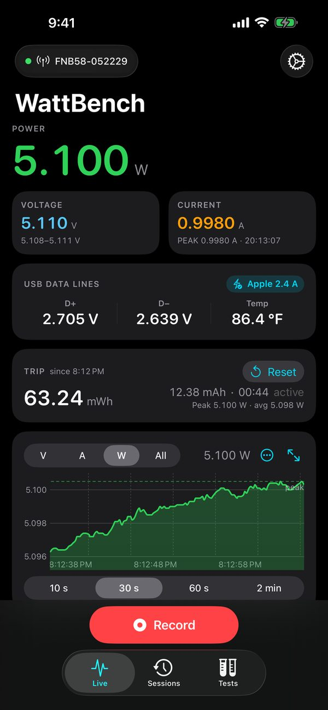
The status pill tells you where things stand: Not connected, Scanning, Connecting, the meter's name in green when data flows, No data when nothing has arrived for two seconds, Reconnecting with a timer after a drop, Unreachable after two minutes, and Demo for simulated readings.
While connecting, a Cancel button stops the attempt; after 25 seconds without an answer WattBench gives up and says so. NEW The Connect sheet now also shows your meter's Firmware, Serial number and Data group.
The Live tab
- Large readout: one metric (Power by default). Tap either tile below to make it the large one.
- Tiles: voltage shows its lowest–highest range since connecting; current and power show their PEAK and when it happened. Long-press for Reset Peaks and Copy Value.
- USB DATA LINES NEW — see the next section.
- TRIP: energy, capacity and active time since you last tapped Reset, with peak and average power. It keeps counting across reconnects and app launches, with no recording needed. A pause icon means no data for five seconds.
- Chart: pick V, A, W or All and a window of 10 s to 2 min. Touch and hold to read a value; drag back through the last two minutes and tap Live to return. Gray bands are dropouts; the dashed line is the peak.
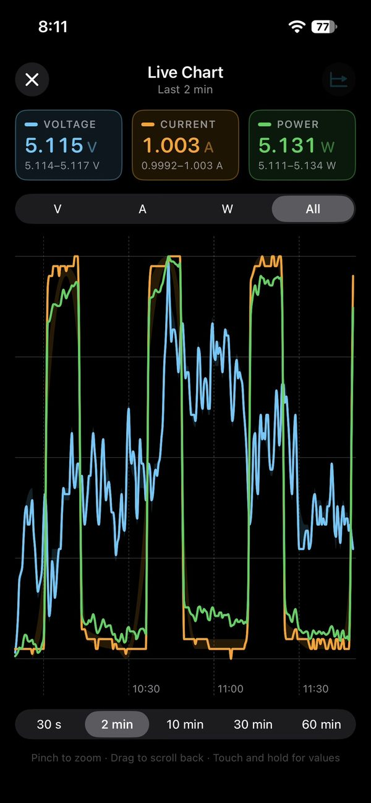
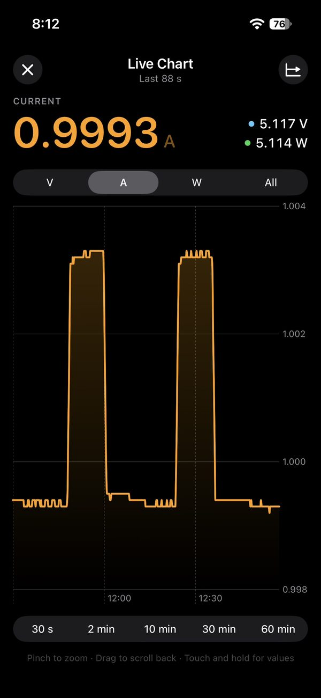
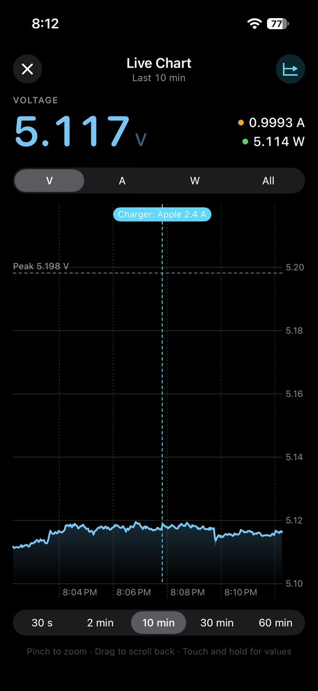
USB data lines NEW
Besides power, the FNB58 reports the voltage on the two USB data wires, D+ and D−, and its own temperature. The card appears on the Live tab as soon as your meter sends them.
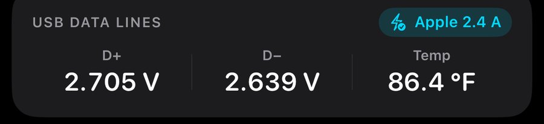
Chargers use D+ and D− to announce what they can do. WattBench recognises the well-known patterns and shows a badge; when the pattern isn't a known one it shows no badge rather than guessing.
| Badge | Meaning | Typical D+ / D− |
|---|---|---|
| Standard USB | No fast-charge signalling (computer port or basic charger). | about 0 V / 0 V |
| USB charger (BC 1.2) | A standard "dedicated charging port" up to 1.5 A. | equal, about 0.6 V |
| Apple 0.5 A / 1 A / 2.1 A / 2.4 A | Apple's charger identification. | 2.0–2.7 V combinations |
| Samsung 2 A | Samsung's charger identification. | about 1.2 V / 1.2 V |
| Quick Charge 9 V / 12 V / 20 V | Qualcomm Quick Charge 2.0 raised the voltage. | 3.3 / 0.6 V at 9 V, 0.6 / 0.6 V at 12 V |
| Quick Charge 3.0 | QC 3.0 fine voltage steps. | 0.6 / 3.3 V |
| USB PD 9–20 V | USB Power Delivery negotiated a higher voltage. PD talks over a separate wire the meter doesn't report, so WattBench infers it from the raised voltage with quiet data lines. | about 0 V / 0 V |
Temp is the meter's own internal temperature (°F or °C following your iPhone's region), not the phone's or the charger's. It rises with current; use it as a heat indicator for the connection.
Recording
- Tap Record, name the recording (a name is suggested), add tags such as Charger or Power bank, and optionally a rule under Stop automatically: current stays below a threshold, after a duration, or at an energy target.
- Tap Start Recording. Lock the phone if you like: with a real meter the recording continues in the background, and every sample is written to disk as it arrives.
- Tap the bookmark to add markers ("Mark 1", or hold for Plugged in, Unplugged, Cable swapped, Load changed, Custom…).
- Tap Stop. The session is saved; the toast offers Undo for five seconds.
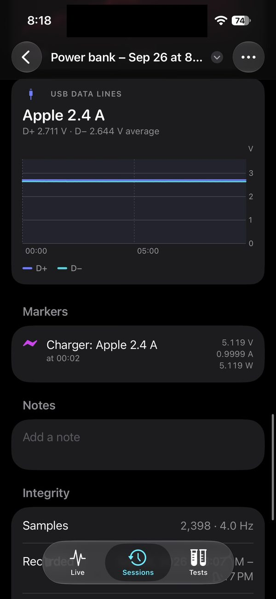
NEW While recording, WattBench also adds charger markers by itself (purple): when the charger changes mode ("Charger: Quick Charge 9 V"), when the voltage steps between 5, 9, 12, 15 and 20 V ("Switched to 9 V"), and when it spots a PPS charger adjusting in fine steps. Turn this off with Mark charger changes automatically in Settings. D+/D− and temperature are saved with every recording too.
If WattBench is closed mid-recording, the next launch offers Keep Recording or Discard for the samples written so far.
Tests NEW
The Tests tab runs guided measurements that end in a report. You can also start one from the title menu on the Live tab (tap "WattBench": Test a Power Bank…, Analyze a Charge…, Check a Cable or Charger…). A USB electronic load such as a DROK — a small board with a current dial, a fan and SET and ON/OFF buttons — makes the power bank and cable tests precise.
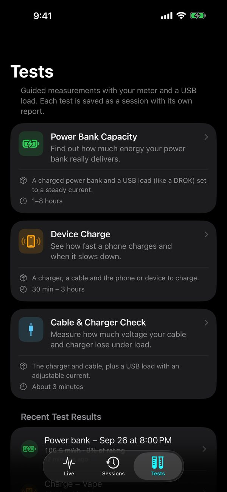
Power Bank Capacity
- Connect power bank → FNB58 → load, with the load switched off. Charge the bank fully first.
- Enter the bank's name, its rated capacity (the mAh on the label) and cell voltage (3.7 V unless the label says otherwise), the current you'll set on the load, and your load's wattage limit. WattBench warns if volts × amps would exceed it.
- Tap Start, then switch the load on. Recording starts as soon as current flows.
- Leave it. It stops by itself 30 seconds after the bank shuts off (or after the DROK's low-voltage cutoff trips). This can take hours; the phone can be locked.
Reading the report: delivered energy (Wh), mAh at the USB bus, cell-equivalent capacity and its percentage of the rating, average current, runtime, and how the test ended. If you stop early the report says the figures are a lower bound.
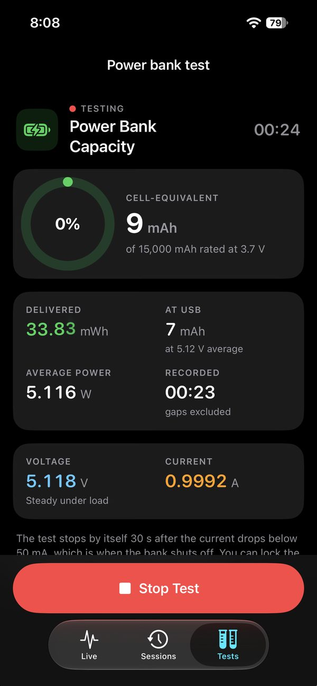
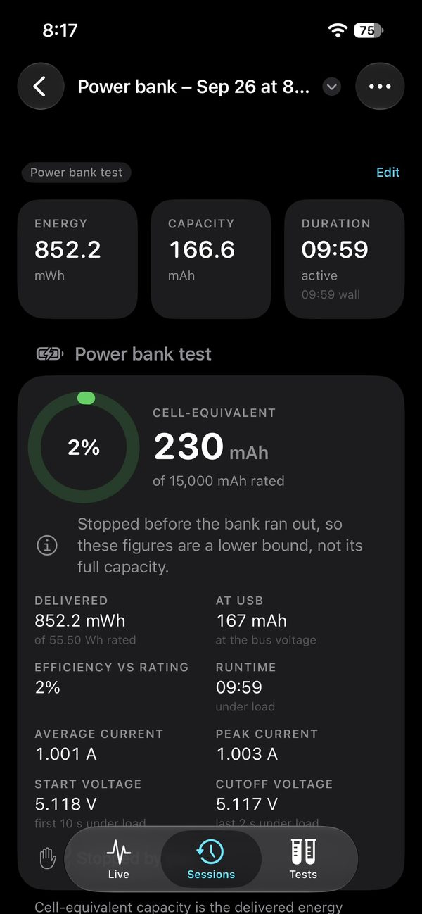
Device Charge
- Connect charger → FNB58 → cable → device. Tap Start; recording begins when the device draws current.
- Watch the Charge phase: Fast (at least 80 % of the peak current), Tapering (30–80 %, the battery is filling and the charger backs off), Trickle (below 30 %, topping off), then Done.
- It stops once the current stays below 100 mA for 2 minutes, or tap Stop and Save.
Reading the report: energy delivered, time per phase and when tapering began, peak power, the charger signalling seen, and an estimated battery capacity (energy ÷ 3.85 V × 85 %). It's an estimate: phones don't report their battery size over USB.
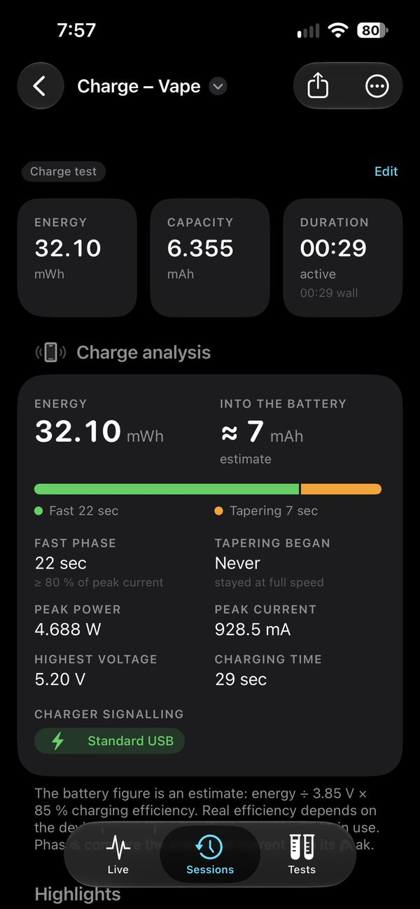
Cable & Charger Check
- Connect charger → cable → FNB58 → load, load switched off.
- For each step, set the current shown on the load's dial. WattBench waits for a steady reading and records it by itself; Capture Now and Skip are there if needed. Steps stop at your load's wattage limit.
- Done works any time after two steps. About three minutes in total.
Reading the result: as current rises, the voltage at the far end drops. WattBench fits a straight line through the steps; its slope is the resistance of the charger and cable together.
| Resistance | Grade | What it means at 2 A |
|---|---|---|
| up to 150 mΩ | Excellent | loses under 0.3 V |
| 150–300 mΩ | Good | 0.3–0.6 V |
| 300–500 mΩ | Fair | 0.6–1.0 V — fine for slow charging |
| over 500 mΩ | Poor | over 1 V — replace the cable or try another charger |
Sessions & reports
- The list groups sessions by day with a power sparkline. Search by name, device, tag or note; Sort by Newest, Longest or Most energy. Swipe for Rename, Share or Delete.
- A session opens as a report: ENERGY, CAPACITY and DURATION tiles (active time excludes dropouts), the test report when the session came from the Tests tab NEW, and Highlights (time-weighted average power, peak, voltage and current ranges, gaps).
- Chart: V, A or W at full resolution, plus Temp and D± for sessions recorded with 1.2 NEW. Pinch to zoom, drag to scroll, touch and hold to read. The shaded band around the line shows the lowest and highest value inside each zoomed-out point.
- Range: tap it, then drag across the chart to get the selection's duration, energy, capacity and averages; Save as Marker Pair keeps it.
- Markers list every marker with the energy delivered until the next one. Icons: flag = yours, broken bolt = dropout, stop = auto-stop, bell = alert, purple bolt = charger change.
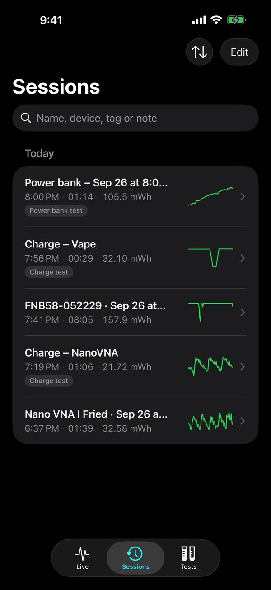
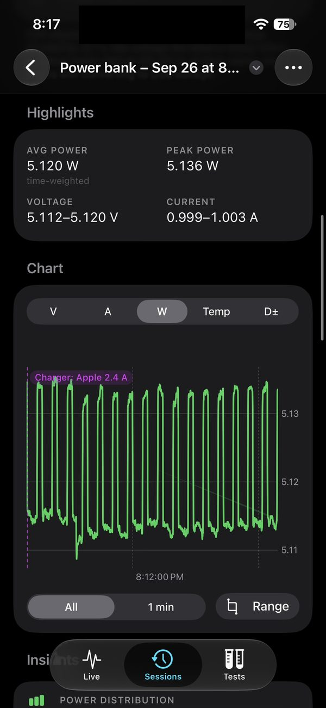
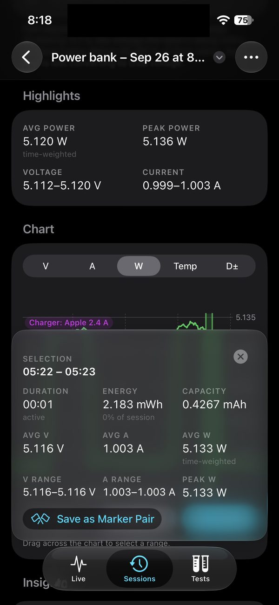
Insights charts NEW
Under the main chart of every session:
- Power distribution: how much time was spent at each power level. One tall bar means steady charging; a spread means the load or charger kept changing. The busiest level and the median are marked.
- Voltage vs current: every sample as a dot, with a fitted line. The steeper the line, the more voltage the charger and cable lose as current rises; the caption gives that as a resistance. It only appears when the current varied by at least 0.3 A.
- Cumulative energy: energy delivered over time. A straight rise is constant power; the curve flattening out is a battery getting full.
- Temperature and D+ / D− over time, with the charger signalling labelled, for sessions that recorded them.
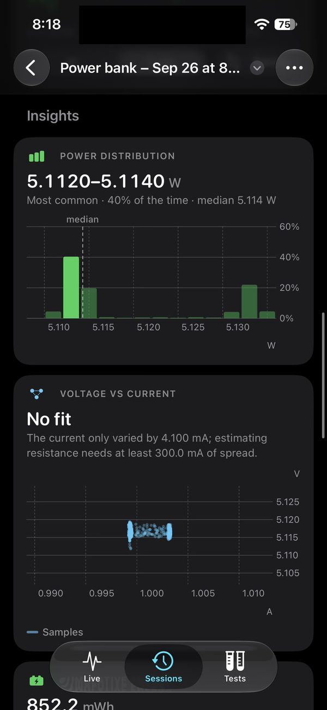
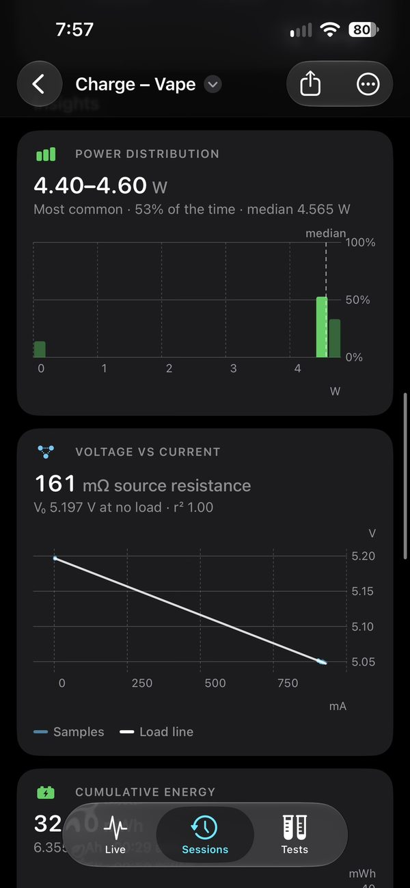
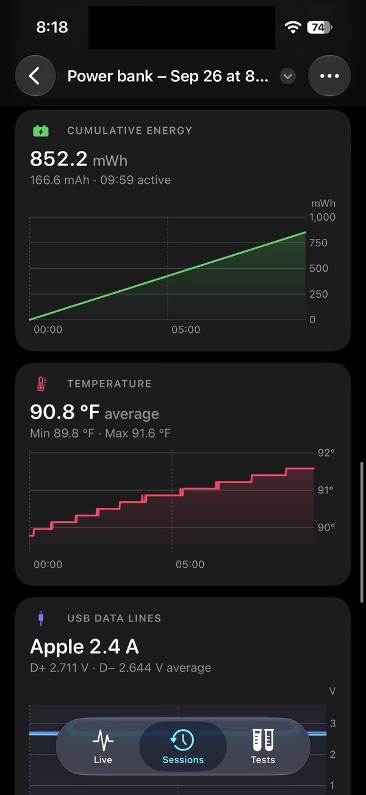
Compare & PDF NEW
- Compare: in Sessions tap Edit, select 2–4 sessions and tap Compare, or long-press a session and choose Compare With…. Curves are aligned to each session's own start, so "Charger A vs Charger B" lines up even if you recorded them hours apart. Pick V, A, W, energy or temperature. The table below stars the best value in each row: energy, capacity, average and peak power, time to 80 % of the energy, maximum temperature.
- PDF report: in a session, tap … then Export PDF Report. You get a clean printable report with the statistics, charts, markers, notes and test details, ready to share.
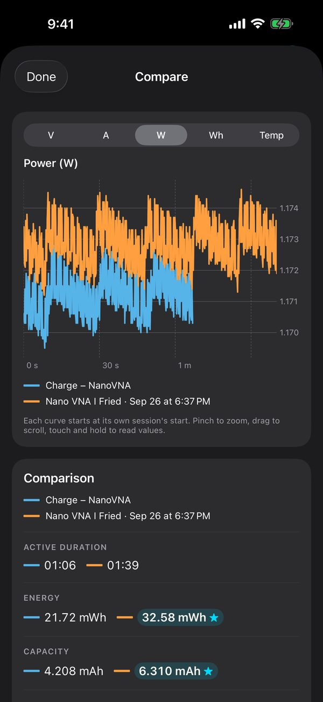
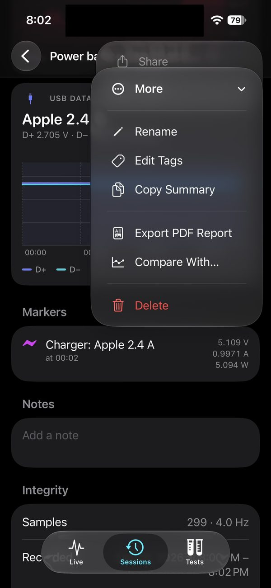
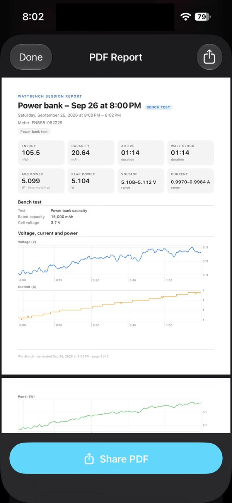
CSV export
Tap Share in a session for a CSV: timestamp (UTC), voltage_v, current_a, power_w, elapsed_s, marker_label, and for 1.2 recordings dplus_v, dminus_v, temp_c NEW. It opens in Numbers, Excel or Python.
Alerts
Open the gear menu → Alert Rules. Rules: Over-voltage, Under-voltage, Over-current, Over-power, Current below, Voltage drop, Disconnected, and new in 1.2 Over-temperature (default 45 °C) and Fast charge lost (the charger falls back from fast charging for 3 seconds) NEW. Presets: USB-C 65 W, 5 V device, Power bank drain, Heat & fast-charge watch.
In the app an alert shows as a red banner with a haptic; in the background it arrives as a notification, which during a recording offers Stop & save. Each rule fires at most once a minute and adds a marker to the recording.
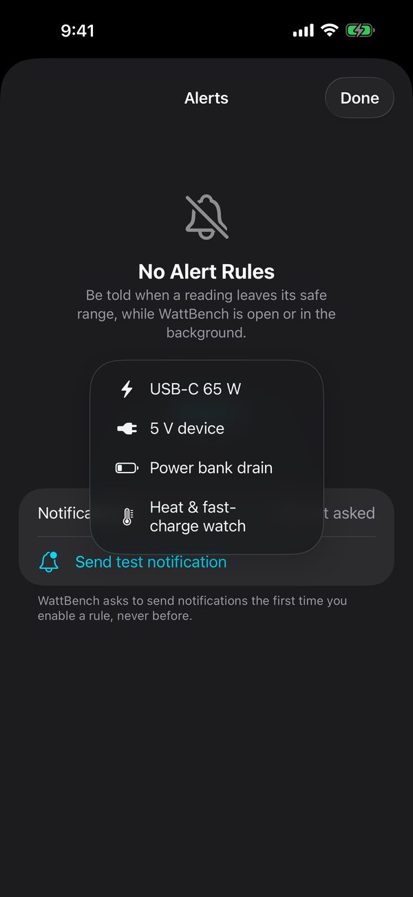
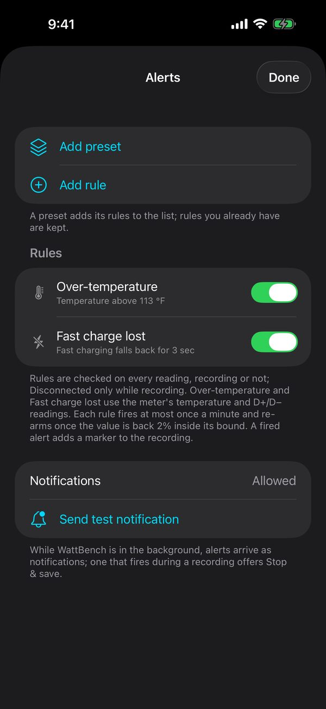
Lock Screen, Dynamic Island, Apple Watch & Siri NEW
- Lock Screen and Dynamic Island: while a recording runs, they show live watts, volts and amps, energy so far and the elapsed time, updating every few seconds even with the phone locked; "Saved" appears when you stop. Tap it to open the Live tab.
- Apple Watch: the same readings appear in your watch's Smart Stack — a power gauge with the watts, plus volts, amps and the recording timer. Requires iOS 18 and watchOS 11 or later; no separate watch app is needed.
- Live readings without recording: tap "WattBench" at the top of the Live tab and switch on Show Live Readings on Lock Screen, or choose in Settings → Recording → Lock Screen live readings: Only while recording (default), Whenever connected or Off.
- StandBy: with the phone on its side while charging, the readings fill the screen as a bench display.
- Siri and Shortcuts: "Start a WattBench recording", "What is WattBench reading", "Show live readings in WattBench".
- Home Screen quick actions (press and hold the icon): Start Recording, Connect to Last Meter.
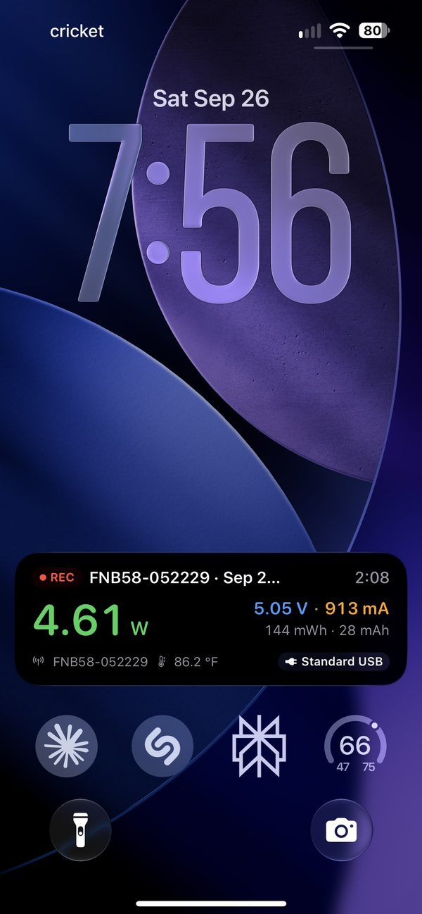
Menus & settings
- Title menu (tap "WattBench" on the Live tab): Connect…, Reconnect to Last Meter, Disconnect, Try Demo Data, and the three tests.
- Gear menu (top right): Settings, Alert Rules, Diagnostics, User Guide.
- Settings: hero metric, auto-ranging units, precision, capacity unit, haptics, keep screen awake; chart window and peak line; default auto-stop, demo exclusion, Live Activity, charger markers; meter auto-connect and forget; storage; diagnostics; about.
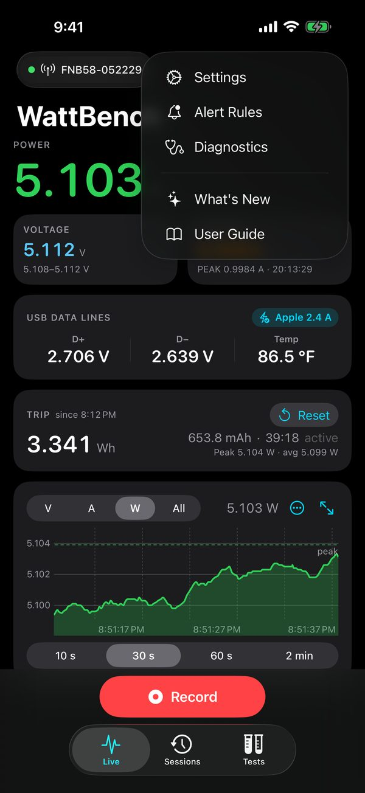
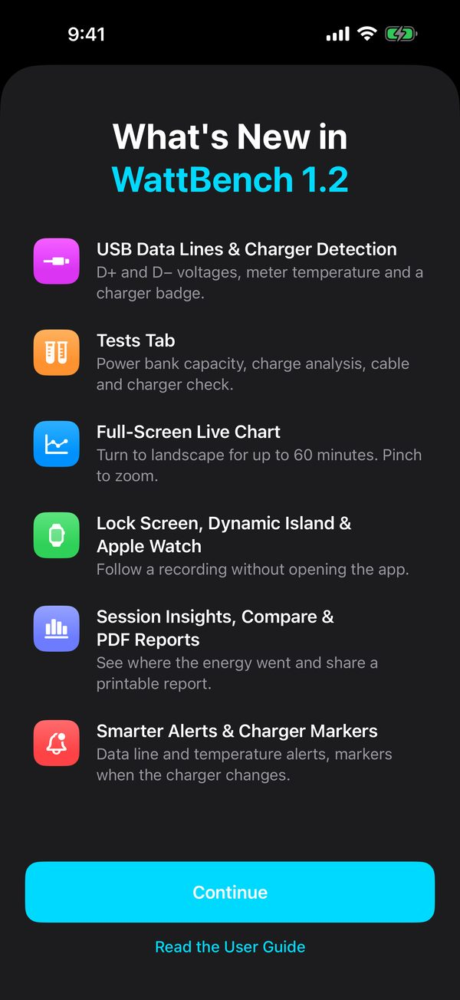
Troubleshooting
Connected, but the pill says "No data"
WattBench asks the meter to start streaming and retries several times. If the meter stays silent, the app says so: switch the FNB58 off and on (unplug it for about 10 seconds), check Bluetooth is on in its menu, and connect again. Its Bluetooth module occasionally needs this reset.
"No Meter Found"
Enable Bluetooth in the meter's own settings menu and keep it within a few metres. If it's connected to another phone or a computer, disconnect it there first.
No USB data lines card
It appears once the meter sends D+/D− or temperature, a second or two after connecting. Demo data includes it, so you can see how it looks.
The cable check won't capture a step
It waits for the current to hold within ±3 % for two seconds. If your load drifts, tap Capture Now.
Something else
Gear menu → Diagnostics → Share, then open an issue and attach it.